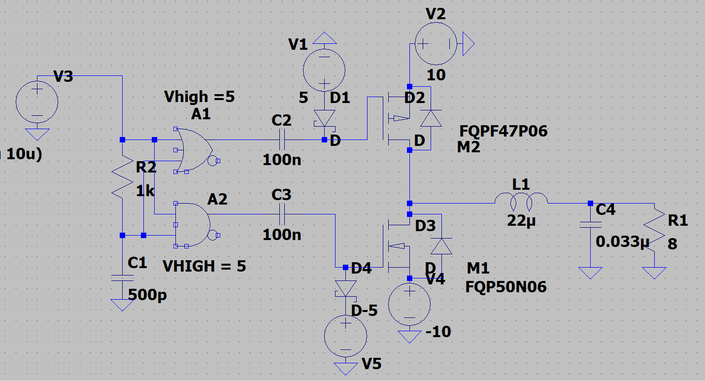
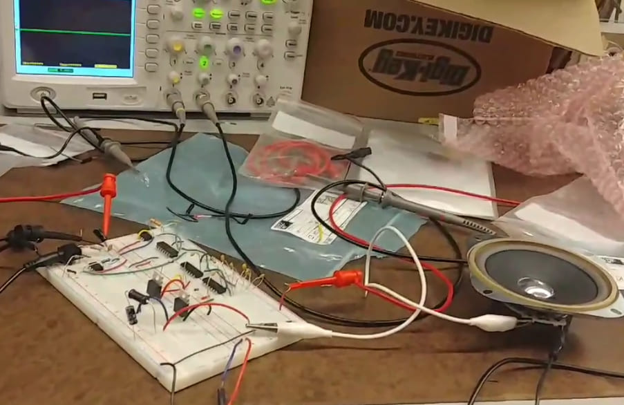

—Inspiration
I have an old iPhone SE from 2015 and I feel left out from the simplicity and ease of wireless charging. I wanted to design a system so I could pretend like my phone has wireless charging.
To do this, I can mount the receiver to the back of my phone and connect the output to a wired charging cable. My design is spec'ed to allow 500mA charging at 5V.
Power flow diagram for inductive charger:

I designed each block independently, and worked backwards from load to specify power requirements and tune/bias circuits.
—Wireless Link
Starting with the heart of the circuit: the wireless link. Since the receiver (connected to the phone) will only be used with one transmitter, the simplest way to transmit power is at a set frequency with magnetic resonant charging.
Since it's at a fixed frequency and fixed power output, I decided to design the circuits without use of transmitter or receiver ICs (definitely NOT Qi-compatible).
Principle of Operation
Wireless charging is inherently less efficient (50% to 70%) than wired charging (80% to 98%). As a result, it is desirable to couple the coils in such a way that the maximum amount of energy can be transferred. Magnetic resonant coupling relies on an oscillating magnetic field to couple magnetic energy between two coils operating at the same resonant freqency. This is less efficient if the system needs to be compatible across a wide range of transmitters/receivers, but more efficient for a single TX/RX combination.
- Key parameters:
- Q-factor: Maximize TX Q-factor (wo*L/R) to minimize loss in transmission
- Coil geometry: Maximum coupling coefficient (k) when TX and RX coils are the same size
- Turns ratio: Higher turns ratio to maximize magnetic energy can be coupled to the receiver
- DC Resistance: Minimize DC resistance to reduce losses
Wurth Electronics WPT Design Tool
Keeping the key parameters in mind, I used the WE wireless power transfer design tool to choose a compatible combination of coils.
—LC Oscillator
The rectified voltage from the TX AC/DC converter goes to the LC oscillator to create a time-varying voltage that can be transmitted over the coils.
I chose to design a Colpitts Oscillator, which consists of an oscillator and a positive feedback network, where one of the reactive elements feeds back to the input.
—Coil Sourcing
I sourced a set of RX/TX coils that have a turns ratio of ~1:1.31. So Vs = 1.31Vp.
I looked into doing resonant coupling, but research shows that inductive coupling is more efficient than resonant coupling because ______.
—RX AC/DC Converter
For the receiver side, I designed a simple full bridge rectifier circuit to create a relatively stable input to the LDO.
I used schottky power diodes with a forward voltage drop of 220mV at 1A to lower power loss.


The AC/DC creates an output of ~6.2V, which will be fed to the LDO. I tuned the output capacitor based on the following equation: Vpp = Iload/2*f*C
—LDO
For fun, I wanted to design a discrete LDO using an op-amp to better understand the mechanism and explore different design parameters. For the final design, I wanted Vout to be ~5.2V so that when it reaches the phone it will be around 5V (tolerance for DCR drop).
First Iteration
First I chose the simplest possible design. I used a voltage source for the reference voltage, an ideal op-amp, a separate source for Vin, and set Iload = 150mA. Since the voltage reference has poor load driving capabilities, it is only used as a reference for the op-amp. R1 controls the current through the zener diode. The PMOS is the pass element in the feedback system, so when a difference between the inverting and non-inverting terminal is detected, it will turn on and allow current to flow from input to output.

To regulate output voltage, the feedback loop controls RDS of the FET. As Vin approaches Vout, the error amplifier (in this case, an op-amp) will drive VGS more negative to lower RDS and maintain regulation.
Voltage reference
The reference voltage has to be stable across a range of input voltages, namely 6V to 9V. This means that the reference voltage cannot vary with load current or input voltage.
I used a zener diode to set the reference voltage.


When the input voltage is kept constant (i.e. 6V) and load current is swept from 100mA to 500mA, the output voltage is relatively stable.

—Simulation
Before prototyping the circuit, I downloaded LTSpice models and simulated the second-half of the circuit (from the comparator to the output) to ensure proper functionality.
—Schematic
—Prototype
Before designing the PCB layout, I breadboarded the circuit to tune the deadtime generator circuit and verify circuit functionality.



—Modifications
After verifying that the board functioned as expected, I started to design the board layout. I decided to power it with a single supply rail, so I had to make some modifications to the circuit. I added in a delay to the turn on time of the NMOS driver so the charge pump capacitor at the gate of the PMOS had time to charge. I also re-biased the gate drivers so the PMOS and NMOS can turn on.
—Board Layout
I designed a 4-layer board that is powered using a USB-C charger. I researched splitting (or partitionign) the analog ground and switching ground, but decided to use one ground reference and keep it clean by having the layer very close (3mil) to the power plane, and using bypass capacitors and bulk capacitors to filter noise and keep the power signals steady (respectively).
I opted for an LDO to get the +5V0 reference voltage for the op-amps and logic gates. I calculated the current draw on the +5V0 plane at 200kHz (the switching frequency), then used the LDO's datasheet to calculate power dissipation. Since the +5V0 line only draws ~5mA, I opted for the cheaper solution. I via-stitched around the regulated voltage to dissipate heat
I also used via stitching to connect the ground planes together (the bottom layer, the second layer, and part of the top layer).
—Improvements
I designed a CCM flyback for the first prototype, but the transformers required were expensive and physically large.